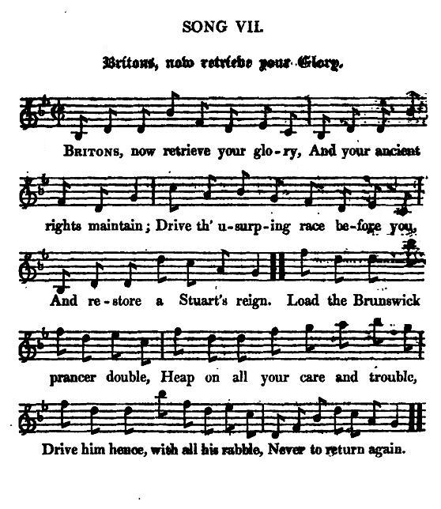

The Fraser Arms
Ceann an fhèidh
Les armoiries des Frasers
followed by "Britons, now retrieve your Glory!"
a song to the same tune, from Hogg's "Jacobite Relics", Vol. II, N°25 page 52, 1821
Tune - Mélodie
Captain Simon Fraser's Collection N°124 (first published 1816)
(Sequenced by Christian Souchon)

|
"This air celebrates the Frasers' arms and crest, distinguished from the "
Cabar Feidh
" of the McKenzies which consists of a front view of the head and horns, whilst the Frasers have a side view of the neck, head and horns of that portly animal the deer."
Captain Fraser: "Airs and Melodies..."
The French motto ("I am ready") recalls the Norman origin of the Clan and the name refers to the old French
frese
, "strawberry". In the 11th century a noble family from Anjou, the Frezels, gave their name to the seigniory La Frézelière. Simon the Fox maintained relations with the
Marquis Jean Angélique Frézeau de la Frézelière
, considering him a blood relative, understanding their shared Norman roots.
|
 |
"Cet air célèbre le blason et l'insigne des Fraser, qui se distingue du "
Cabar Feidh
" des McKenzie qui montre une vue de face, tête et bois tandis que les Fraser présentent un profil, cou, tête et bois, du majestueux animal qu'est le cerf."
Captain Fraser: "Airs and Melodies..."
La devise en français rappelle l'origine normande du Clan dont le nom provient du vieux-français
frese
, "fraise". Au XIe siècle, des chevaliers angevins, appelés Frezel ou Frézeau, donnèrent leur nom à la seigneurie de La Frézelière. Simon le Renard entretenait des relations suivies avec le
Marquis Jean Angélique Frézeau de la Frézelière
qu'il considérait comme un parent, compte tenu de leurs origines normandes communes.
|

|
BRITONS, NOW RETRIEVE YOUR GLORY!
1. Britons, now retrieve your glory, And your ancient rights maintain ; Drive th' usurping race before you, And restore a Stuart's reign. (twice) Load the Brunswick prancer double, Heap on all your care and trouble, Drive him hence, with all his rabble, Never to return again. (four times) 2. Call your injur'd king to save you, Ere you farther are oppress'd; He's so good, he will forgive you, And receive you to his breast. Think on all the wrongs you've done him, Bow your rebel necks, and own him ; Quickly make amends, and crown him, Or you never can be blest. |
BRITONS OU EST VOTRE GLOIRE?
1. Britons, où est votre gloire, Vos droits et votre histoire? Chassez l'usurpateur! Restaurez Le règne des Stuarts! (bis) Puisque Hanovre caracole Il faut le charger en double De vos soucis et des troubles Et le contraindre au départ. (quater) 2. Appelez donc à votre aide Vous que la peine obsède Ce roi généreux qui veut vous Recevoir à merci. Pensez au mal que vous faites! Baissez humblement la tête! Tenez la couronne prête! Le salut est à ce prix. (Trad. Christian Souchon(c)2010) |